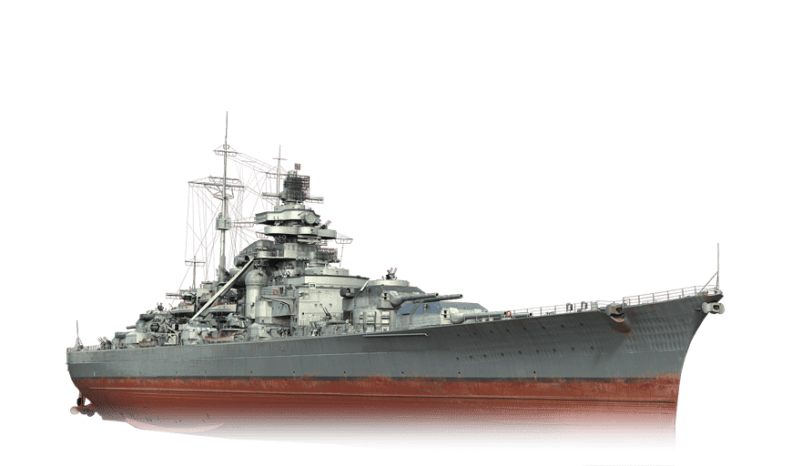
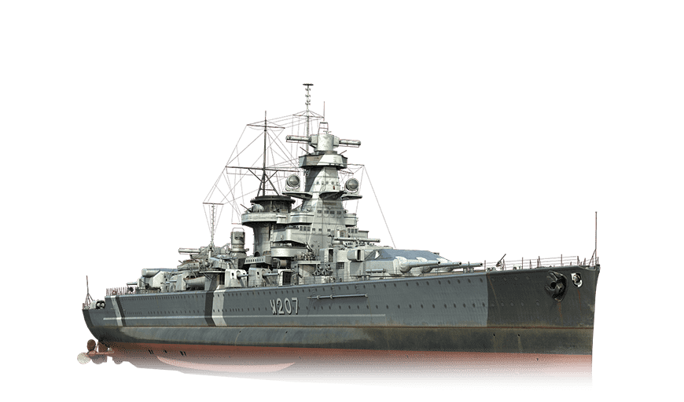
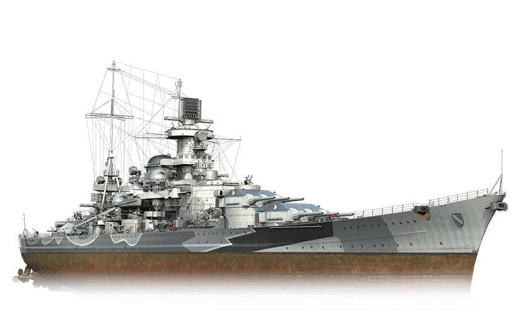

Kriegsmarine
Kriegsmarine
BismarckEl Bismarck fue un acorazado de la Marina alemana durante la Segunda Guerra Mundial, considerado uno de los barcos más poderosos y temidos de su época. Fue botado en 1939 y participó en una sola misión antes de ser hundido.

|
TirpitzEl Tirpitz fue un acorazado de la Marina alemana durante la Segunda Guerra Mundial, considerado uno de los barcos más grandes y poderosos de su época. Fue botado en 1939 y participó en varias operaciones durante la guerra, incluyendo la Batalla del Atlántico y la Operación Cerberus. 
|
Admiral Graf SpeeEl Admiral Graf Spee fue un crucero pesado de la Kriegsmarine que operó principalmente en el Atlántico Sur durante la Segunda Guerra Mundial. El barco ganó notoriedad durante la Batalla del Río de la Plata en diciembre de 1939, cuando se enfrentó a tres cruceros británicos. A pesar de haber infligido daños significativos a los barcos enemigos, el Admiral Graf Spee sufrió daños graves y tuvo que refugiarse en Montevideo, donde finalmente fue hundido por su tripulación.

|
El Scharnhorst fue un acorazado de la Marina alemana durante la Segunda Guerra Mundial. Fue construido a mediados de la década de 1930 y se destacó por su velocidad y potencia de fuego. Participó en numerosas operaciones donde hundió varios buques mercantes aliados. En diciembre de 1943, el Scharnhorst fue interceptado y hundido por la Marina británica en la Batalla del Cabo Norte
